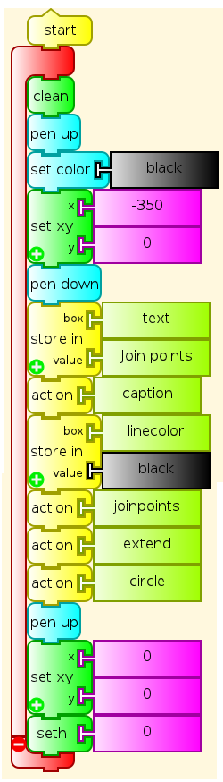
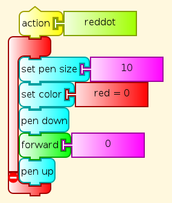
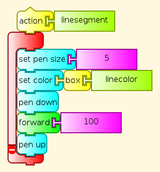
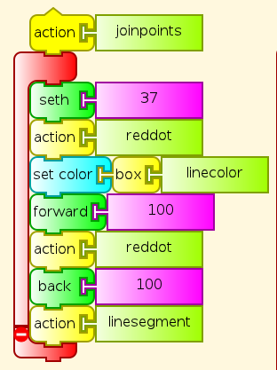
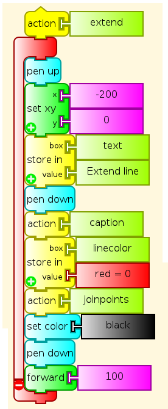
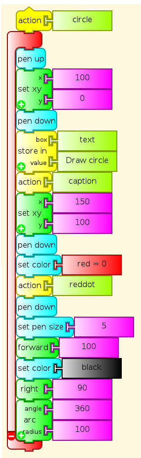
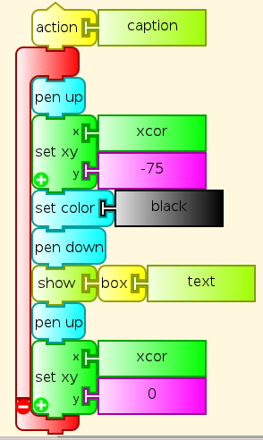

Euclid Program¶
To join two points with a line, I actually set the Turtle on a point, set its heading (the direction it was pointing) and sent it off in that direction both to draw the second point and to draw the line joining the points.
To extend a line, I drew it, and then told the Turtle to go forward in the same direction.
To draw a circle, I put the Turtle at the outer end of the line, and told it the radius length.






